Planning Without Limits
Gentle Reader, if you are from the school of thought “Was there ever a limit?”, then you have come to the right place; this chapter is all about going beyond – far beyond – the normal scope of Planning solely in a Cube. If you are from the “What’s the limit look like?” (like me) school of thought, read on.
Planning Without Limits
Boxed In by The Cube
Multidimensional databases, typically called Cubes in OneStream parlance, are a powerful metaphor for describing, managing, and navigating hierarchical data structures. The concept is powerful, the tool is powerful, its uses are broad and deep.
However, by its very nature, in a multidimensional world everything is a Cube. The reason is simple: in this world view, data cannot be addressed without it being present in the Cube and to have it in the Cube, it must have all the metadata in the Cube to represent the data. The Cube is the beginning and ending of all.
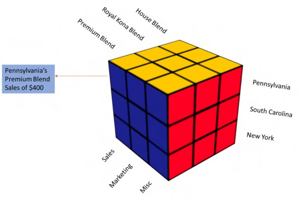
Figure 4.1
But a Cube is not always the answer. Planning does not always fit within a Cube. Sometimes Planners need to work with data that, because of its textual nature, data level, or rapidly-changing metadata, is a poor candidate for the dimensionality that a Cube requires.
Some legacy platforms attempted to overcome this through a limited merging of the relational with the multidimensional. Let us travel, Gentle Reader, down a memory lane of XOLAP and supporting details where the data store could be entirely relational (but still Cube-based) or supplemental to the Cube by supporting User-driven, non-Cube detail. In theory, those techniques helped achieve the commingling of two separate worlds. In practice, this approach proved to be cumbersome to implement, use, and report.
The Cube that provides so much power and flexibility boxes the Planning process in because its paradigm of multidimensionality is necessarily hierarchical, where hierarchy is not sufficient to describe and solve Planning and Budgeting requirements.
How does OneStream then break the limitations of the Cube?
Planning Without Limits
Planning without Limits
Where other vendors remain wedded to the Cube for all data, whatever the appropriateness might be because they have no other option, OneStream rejected this approach and instead came up with a simple and elegant philosophy: “Don’t try to add relational/transactional items into a Cube.”
Custom, non-vendor solutions to this problem exist, such as a system that stores data in relational tables with custom web-based forms for data entry. That data is loaded into Cubes where calculations happen. Once calculated, data then moves back to another set of relational tables for reporting.
This approach is difficult because it involves multiple products, and the different skillsets of multidimensional databases, relational tables, and reporting from both technologies. OneStream solves the issue of multiple products and different interfaces for the End-User by combining the relational with the Cube directly in one product.
This blend of data architectures has two primary use cases:
Supplementing data with more information.
Planning at a detailed level.
Planning Without Limits › Planning without Limits
Supplemental Data
If you have used legacy solutions, you will likely have heard about the terms supporting detail, text members, and attributes. OneStream supports all three concepts in a highly flexible manner.
Planning Without Limits › Planning without Limits › Supplemental Data
Coffee, Coffee, Coffee Everywhere, is There a Drop to Drink?
As part of its reporting process, our fictional C&C Coffee Company reports its coffee sales by state.
Figure 4.2
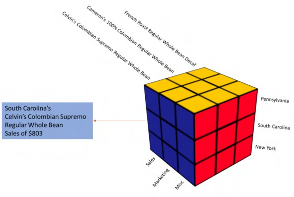
Figure 4.3
Sales figures (and other Accounts) are captured at a detailed level by Sales Representatives by Product by City. At a Cube level, the data is summarized to the Product and State level; Sales Representative and City are not carried in the Cube.
Imagine Celvin as a Sales Representative selling his very own Celvin’s Colombian Supremo Regular Whole Bean to a store in Charleston, South Carolina in August 2021. Cameron is an enthusiastic analyst in FP&A that needs this detailed information to analyze and understand C&CCC’s sales performance.
Planning Without Limits › Planning without Limits › Supplemental Data
Use that Staging Area
How does OneStream store information that is not in a Cube? Sales Representative and City are not carried in the Cube.
Cube data cannot be loaded directly from any sort of external data source, whether it be Excel, text, or relational. Instead, it must go through a data staging space, commonly called Stage, that acts as a clearing house for data. As a pictorial metaphor, the below image shows the gatekeeper role of Stage.
Figure 4.4
There is no way to import data into OneStream Cubes without getting a pass from Stagealf (or Stage).
Stage data supports 20 text and 12 value attributes for loading additional information to complement Cube data. Think of these as data attributes since these are tied to data, not the Cube itself.
The last two lines of the below data file show the Sales_Rep and City attributes for Celvin’s August 2021 sales:
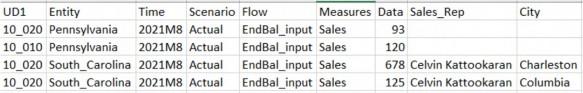
Figure 4.5
We can load this file and its additional Sales_Rep and City fields by enabling two text attributes for the Actual Scenario Type in the Cube Integration tab. If all data files/connectors with this Scenario Type use the same attributes, an alias can be added to aid User comprehension.
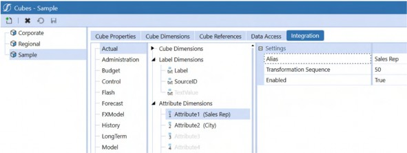
Figure 4.6
Stage Attribute Dimensions are selectable by Scenario Type, allowing more or less supplemental data as needed.
| NB: Attribute Dimensions and Attribute Value Dimensions are not enabled by default. |
Within the data source definition for this file, a simple match of field column to Attribute Dimension is all that is required to load data for Dimensions that do not exist in any Cube.
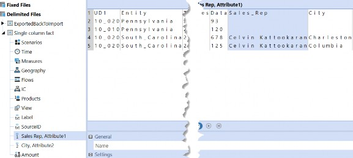
Figure 4.7
On Import, the Attributes can be observed as part of the data load.
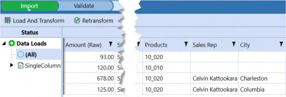
Figure 4.8
The Validation step shows you the summarized view of those last two South Carolina records into one, and suppresses the Attribute Dimensions; validation is a Cube construct and thus cannot show Stage Attribute Dimensions.
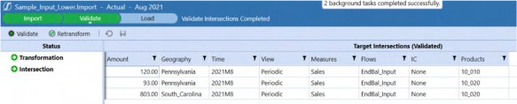
Figure 4.9
Once loaded, Cameron can now perform his analysis using Drill Downs and drill backs.
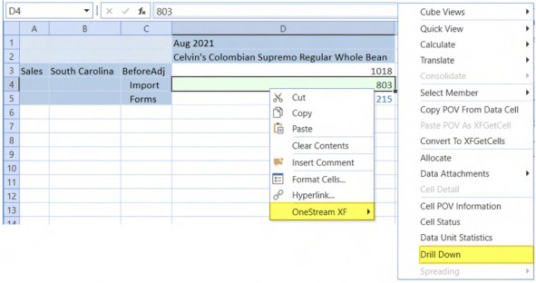
Figure 4.10
Planning Without Limits › Planning without Limits › Supplemental Data
Drill Down
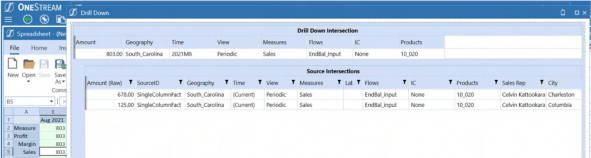
Figure 4.11
Cameron is happy (for those who know Cameron, this is quite the accomplishment). The analytical requirement of going beyond the limits of the Cube has been fulfilled.
Planning Without Limits › Planning without Limits › Supplemental Data
Back to the Cube
The above example shows the reporting of Cube and supplemental data but does not illustrate the merging of Cube and supplemental relational data as both cannot be seen at the same time. Cube data is available in one interface, non-Cube data is viewed in a similar albeit different way. Those data points are still separate and one must still drill down to get the details.
How can both the Cube numbers and the details be viewed in the same Report? Your author has an answer for that. Well, he has multiple answers. If he is trying to be more accurate, he is behaving like his younger (much younger) self, who is raising his hand and jumping up and down in his seat.
“Relational Blending!” he wants to shout.
Planning Without Limits › Planning without Limits › Supplemental Data
What is Relational Blending? Is it a Mind-Bending Trick?
Relational Blending is just what it says: it is a way to blend relational data with Cube data. OneStream provides functions to support that blend of data Types.
Planning Without Limits › Planning without Limits › Supplemental Data › What is Relational Blending? Is it a Mind-Bending Trick?
Relational Blending API Methods
The following Methods query/calculate blend data:
GetStageBlendTextUsingCurrentPOVGetStageBlendTextUsingCurrentPOVGetStageBlendTextGetStageBlendNumberUsingCurrentPOVGetStageBlendNumberGetStageBlendDataTableUsingCurrentPOVGetStageBlendDataTableGetCustomBlendDataTableUsingCurrentPOVGetCustomBlendDataTable
What information is being blended – and where that data is located – drives the function selection.
Our use case is blending external table-based text information with Cube data, so the function to use is GetCustomBlendDataTableUsingCurrentPOV.
Public Function GetCustomBlendDataTableUsingCurrentPOV(ByVal cacheLevel As BlendCacheLevelTypes, ByVal cacheName As String, ByVal sourceDBLocation As String, ByVal sourceSQL) As DataTable
Planning Without Limits › Planning without Limits › Supplemental Data › What is Relational Blending? Is it a Mind-Bending Trick?
Cache Levels
After choosing the correct function, we need to find out what cache level is needed for the formula. The following cache levels are available for Relational blending API.
WfProfileScenarioTimeWfProfileScenarioTimeEntityWfProfileScenarioTimeAccountWfProfileScenarioTimeEntityAccountCustom– only use with the custom blend API because, in that context, the custom SQL drives the cache
Why is cache level important? Let me explain through a daily chore that anyone with young children can relate to. (For those of you who do not have children or who have mercifully forgotten the following because of the passage of time, you have missed out on some not-entirely-minor physical pain, but the idea is easy to grasp.)
Planning Without Limits › Planning without Limits › Supplemental Data › What is Relational Blending? Is it a Mind-Bending Trick? › Cache Levels
A Childhood Analogy
Those Little Plastic Blocks From Denmark are a wonderful educational toy. Children love them because they are a blank slate upon which they can build; parents look on approvingly because they are not a video game or television. After a while, however, said parents might start thinking those snap-together building blocks are evil because of their ability to camouflage their location and their little sharp (and strong) corners when stepped upon with bare feet. Those little buggers hide and hurt in places where it hurts the most, clog vacuum cleaners, and then add insult to not-inconsiderable injury by making the victims dig them out from the dust pile within the vacuum bag. Ugh.
A way to sort and segregate and select these blocks from Hell would be nice. Sadistic (and hopelessly unrealistic) parents, of course, turn immediately to the idea of having their kids clean them up and sort them by color. Yellow bricks go and stay in the yellow box, red ones in the red box, and so on. Once sorted, it is easier to find a brick instead of dumping them all onto the floor, although there will, of course, remain the usual moderate level of natural anarchy and entropy �.
If the plastic building block gods smile upon you, those wee little rascals could sort the bricks by size/shape (getting them to colored boxes itself is a big deal). It is now easier to find a square yellow brick from the color-size/shape box compared to dumping the whole colored box.
Relational blend caches are similar to those boxes except for the plastic, the physical pain, and the unhappy children who have strangely satisfied parents.
Think of WFProfileScenarioTime, WFProfileScenarioEntity, WFProfileScenarioAccount as the colored boxes. Supplemental information needed from Stage based on Profile, Scenario, and Time/Entity/Account can be stored in separate boxes and queried there instead of searching the whole staging area.
Similarly, WFProfileScenarioTimeEntityAccount is our color-size/shape sorted box. It is a more granular level where you can easily get to the supplemental items.
It is important to pick the right cache level, as it is directly related to the performance of the query (and directly related to the pain it can cause, as with the case of those damnable little plastic bricks). When dealing with the relational world, the less you query the source tables, the better the performance, because of the time OneStream spends creating and closing connections, on a cell-by-cell basis, when it queries relational data in a grid.
In our example, we are looking for the details of a State, Account, and Product from the relational store, then the choice of cache is only one. You can only use Custom as your cache if you are using a custom blend. When using the CustomBlendDataTable Method, the SQL used to get the data defines the cache for you.
Planning Without Limits › Planning without Limits › Supplemental Data
Back to the Cube
With the cache defined as custom, we can create a Dimension Member (we have arrived at the blend) to retrieve the Sales Rep details.
The UD8 Dimension can be used to add these analysis-based Members, even though they are not part of the Cube, so long as they are formulas and refer to the default U8#None Member.
When OneStream stores data in its fact tables, it stores it for each User-Defined Dimension, whether or not it is part of the Cube. If a Dimension is not part of the Cube (by default, the RootDimensions, e.g., Root<DimType>Dim becomes the Cube Dimension), OS stores the data against the default None Member.
A note about hierarchies in Dimension Types not assigned to the Cube: OneStream’s Dimension editor allows the creation of an unlimited number of Dimensions and hierarchies within Dimension Types. The presence of a Dimension in, for instance, Dimension Type UD8, does not mean it is addressable in a Cube until it is explicitly made part of that Cube. There is a somewhat confusing exception to this rule in that dynamic Member Formulas in a non-Cube Dimension against None are allowed – think of them as reporting elements.
Relational Blend Formula in U8#Sales_Representative
The blend part of Relational Blend now becomes clear: a Member Formula in UD8 will query relational data, display it in a Cube View or Quick View, use the dimensionality of the other Dimensions to drive the retrieve (both on grid and POV), and then retrieve the relational data alongside Cube data.
To display the sales detail textual data, the Member U8#Sales_Representative is created with the formula Type of DynamicCalc. Since this is text, the formula should only execute when the V#Annotation Type Member is used.
If api.View.IsAnnotationType Then
The data is only valid at the lowest level of Cube data. The code example, below, checks whether the Entity and UD1 Members in the Quick View/Cube View are Base Members of Entity and UD1. Check for this condition using the following metadata test:
If Not api.Entity.HasChildren And api.Members.GetMembersUsingFilter(api.pov.UD1Dim.DimPk, "U1#" & productName & ".Base").Count = 1 Then
This formula should execute only when there is data in U8#None. To return text information, the View Dimension Member must be Annotation. The formula queries U8#None:V#Periodic’s IsRealData status by using the VB.Net function Replace to substitute U8#None for U8#SalesRep or U8#SalesOrderNumber and V#Periodic for V#Annotation and then testing for U8#None:V#Periodic’s data status.
This check is performed in the following way.
If api.Data.GetDataCell(api.pov.GetDataCellPk.GetMemberScript(api).Replac e("SalesRep", "None").Replace("SalesOrderNumber", "None").Replace("Annotation", "Periodic")).CellStatus.IsRealData
We now have all of our checks and balances in place. The task of generating the SQL for getting the Sales Rep name begins with declaring the Text.StringBuilder variable to hold the query and retrieving the POV Members for Product, Geography, and Account.
Dim sql As New Text.StringBuilder
Dim productName As String = api.Pov.UD1.Name
Dim geographyName As String = api.Pov.Entity.Name Dim accountName As String = api.Pov.Account.NameYour author likes using StringBuilder for generating statements, but it is purely a personal preference. You can use a string and then append to it, or use string interpolation to achieve the same result.
Planning Without Limits › Planning without Limits › Supplemental Data › Back to the Cube
Data Mart Schema
After all of the above as prologue, blending relational data alongside Cube data is now just a matter of SELECT, JOIN, and WHERE clauses.
This schema diagram shows the table layout in C&CCC’s sales data mart.
Planning Without Limits › Planning without Limits › Supplemental Data › Back to the Cube › Data Mart Schema
Table Layout
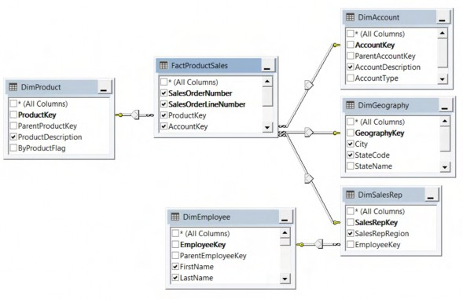
Figure 4.12
Planning Without Limits › Planning without Limits › Supplemental Data › Back to the Cube › Data Mart Schema
Data
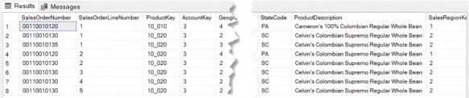
Figure 4.13
Planning Without Limits › Planning without Limits › Supplemental Data › Back to the Cube
SQL
The SQL to retrieve the Sales Rep (representative) information is a linking process of all related keys in the central FactProductSales table:
sql.Appendline("SELECT f.FirstName + ' ' + f.LastName as 'SalesRep'") sql.Appendline("FROM FactProductSales a")
sql.Appendline("LEFT OUTER JOIN DimAccount b On a.AccountKey = b.AccountKey")
sql.Appendline("LEFT OUTER JOIN DimGeography c ON a.GeographyKey=c.GeographyKey") sql.Appendline("LEFT OUTER JOIN DimProduct d ON a.ProductKey=d.ProductKey")
sql.Appendline("LEFT OUTER JOIN DimSalesRep e ON a.SalesRepKey = e.SalesRepKey")
sql.Appendline("LEFT OUTER JOIN DimEmployee f ON e.EmployeeKey = f.EmployeeKey")We are returning the first and last name of the Sales Representative. Even if there is no Sales Representative for a product, the code needs to return a result, hence the LEFT OUTER JOIN.
The filters to get Geography, Account, and Product combination is shown below.
sql.AppendLine("WHERE c.StateAlternateName='" & geographyName & "'") sql.AppendLine("AND b.AccountDescription='" & accountName & "'") sql.AppendLine("AND d.ProductKey='" & productName & "'")
When the SQL is complete, it is ready to be run against the relational database.
Planning Without Limits › Planning without Limits › Supplemental Data › Back to the Cube
Connections, Connections, Connections
Retrieving this data takes three steps:
Use relational blend formula to fetch the
SalesRepinformation.Confirm that data was actually retrieved.
Return a comma-delimited list of Sales Representatives.
Dim dt As DataTable = api.Functions.GetCustomBlendDataTable( _ BlendCacheLevelTypes.Custom, "RepName" & geographyName & productName & accountName, "AVBS Warehouse", sql.ToString)
If dt.Rows.Count > 0 Then
Dim salesRepList As List(Of String) = dt.AsEnumerable().Select(Function(x) x("SalesRep").toString()).ToList()
Return String.join(", ", salesRepList.Distinct) End IfOnce we have the list of Sales Representatives, we now return the unique comma-separated string to the target Quick View/Cube View.
Here is the full formula in all its glory:
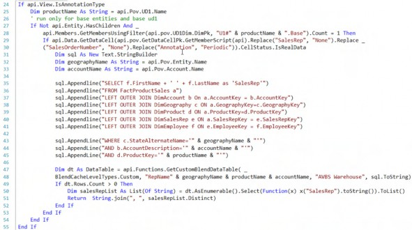
A similar formula (not documented but practically identical save for the fields) can provide a list of Sales Order numbers as well.
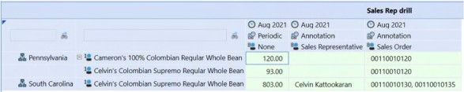
Figure 4.14
Planning Without Limits › Planning without Limits › Supplemental Data › Back to the Cube
An Alternate View
Multiple items for a single data point can be hard to read when combined in a cell. Some Users are okay with it, and some are not.
For those who are not happy looking at lengthy text, an option might be to mimic the drill back on a single two-panel Dashboard, as shown below.
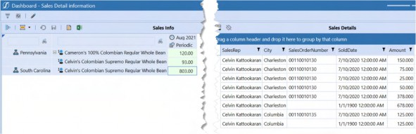
Figure 4.15
We now have a way to blend relational and Cube data for analysis in a seamless and agile fashion. OneStream has delivered functionality and flexibility that no other product can boast of.
But that melding of relational and Cube is only for reporting and this, after all, is a book about Planning. Let us now look at how we can plan at a detailed relational level in OneStream without bringing that detail into the Cube.
Planning Without Limits › Planning without Limits
Planning at a Detailed Level Without the Detail
How is it possible to plan at a detailed level without the detail? Is it trickery? Black magic? The answer is OneStream’s Specialty Planning.
Think of Specialty Planning as a type of “relational blending”, but in this case there are no out-of-the-box functions; it is a solution delivered by OneStream’s MarketPlace.
Before we start looking at the MarketPlace solutions, let’s look at what makes Specialty Planning special.
Planning Without Limits › Planning without Limits › Planning at a Detailed Level Without the Detail
A Little Bit of This, a Little Bit of That
The recipe for Specialty Solutions (for this chapter, we will look only at solutions that allow Plan data at a more granular level than the Cube level) is simple. You store (how the solution is configured, how it is calculated, or how the data is stored) the details of the solution in its tables and sprinkle a few Dashboards on top of it. A Specialty solution is born. What could possibly be easier?
A note about the rest of this chapter. It does not (because it cannot) cover every nuance of what is, after all, a highly customizable and very broad set of functionality. Think of the following as a set of specific and necessarily limited use cases, documented as fully as space allows.
Planning Without Limits › Planning without Limits › Planning at a Detailed Level Without the Detail
Where to Go, and What to Do with the Specialty Solutions
Specialty Solutions are not natively part of OneStream. They are instead optional modules that customers deploy on an as-needed basis, eschewing Components that are not pertinent for a given application, e.g., Accounts Reconciliation is an unlikely (although not unheard of in Planning if combined with a Consolidations Component) solution for a Planning application, as is People Planning in a financial reporting-only application. The advantage of all MarketPlace solutions is that their functionality is incorporated only when needed.
You might have already heard of (or used) OneStream’s MarketPlace to download tools like Table Data Manager and the Excel Metadata Builder. All of OneStream’s optional modules that are available in the MarketPlace are called Specialty Solutions, and the ones which help to Plan, are called Specialty Planning solutions or, in some cases, Specialty Planning.
Connect to the MarketPlace, log in (OneStream provides the access), and when you are in the MarketPlace Solution Center, navigate to Planning.
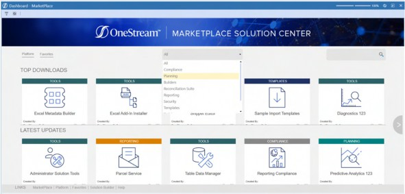
Figure 4.16
Once you are in the Planning section of MarketPlace, all seven (as of writing this book) Specialty Planning solutions are available.
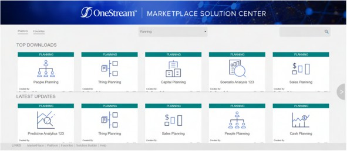
Figure 4.17
Once you find the solution you want, just go ahead and download it. Easy peasy lemon squeezy!
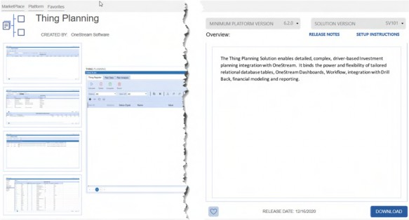
Figure 4.18
Installing a Specialty Solution is outside the scope of this chapter as it is well covered in every Specialty solution help guide.
You can find help using the upper right-hand corner ? icon in every Specialty Solution.
Figure 4.19
Planning Without Limits › Planning without Limits › Planning at a Detailed Level Without the Detail
Special Considerations on Configuration
While the configuration of Specialty Planning solutions is covered in the help guide, your author would like to share some of the wisdom he has learned through his implementations.
Planning Without Limits › Planning without Limits › Planning at a Detailed Level Without the Detail › Special Considerations on Configuration
Dashboard Profile Access
Once the solution is set up, change the visibility of the XFW Thing Planning (TLP) Dashboard Profile to Workflow from OnePlace.
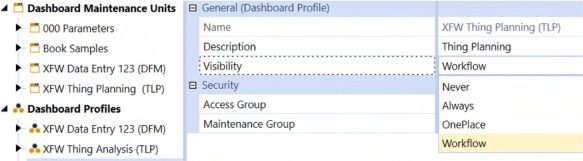
Figure 4.20
All Specialty Planning solutions add the current Workflow Profile, Scenario, and Time to the Register table. If the Dashboard Profile from OnePlace is used to access the solution instead of via a Workflow, there might be records saved against a Workflow that have nothing to do with Specialty Planning.
For example, C&CCC’s Volume Planning Workflow has the following setup:
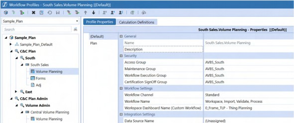
Figure 4.21
All the sales volume details are captured in Thing Planning against this Workflow. If an Administrator who was loading 2021M8 Actual values accidentally entered some details in Thing Planning via…
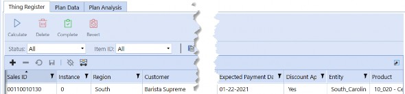
Figure 4.22
…the record is stored in the Register.
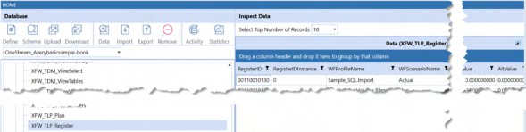
Figure 4.23
The record shows up as long as Thing Planning is not accessed from the Workflow Profile. However, that record will not show up from the proper Plan Workflow and Scenario, because it was recorded against the Actual Scenario.
Change that access to keep your sanity!
Planning Without Limits › Planning without Limits › Planning at a Detailed Level Without the Detail › Special Considerations on Configuration
Control Lists
Use control lists as a way to restrict free-hand entry to the following columns:
12 Text fields (Code1-Code12)
8 Numeric fields (NCode1-NCode8)
InCode
OutCode
Level
Planning Without Limits › Planning without Limits › Planning at a Detailed Level Without the Detail › Special Considerations on Configuration
Date Field Default Values
Date fields have a default value of 1900-01-01.
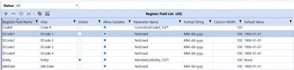
Figure 4.24
If Users want to only enter YY for the year in those date fields, by default OneStream automatically fills 19 in front of it. As the 20th century has now receded into the past, always change the default to 2000-01-01.
Planning Without Limits › Planning without Limits › Planning at a Detailed Level Without the Detail › Special Considerations on Configuration
Keep those Custom Parameters in Another Unit
If you create parameters for a MarketPlace solution, keep those parameters in a different Dashboard Unit to avoid losing them in an update of the Specialty Planning solution (most of the updates will need an uninstall of the UI, which will remove all the Components from the Dashboard Maintenance Unit).
Note: For Thing Planning, suffix the custom parameters with _TLP (People Planning will be _PLP, and so on for other solutions). |
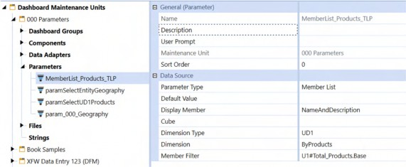
Figure 4.25
The _TLP suffix allows Thing Planning to see those custom parameters in the Parameter Name field:
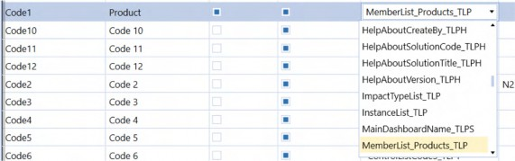
Figure 4.26
Planning Without Limits › Planning without Limits › Planning at a Detailed Level Without the Detail › Special Considerations on Configuration
Register Field Types
While OneStream allows you to change the data Type of Code1-Code12 to Numeric/Date, be cautious because of the way the field Type is inconsistently treated in different internal tables.
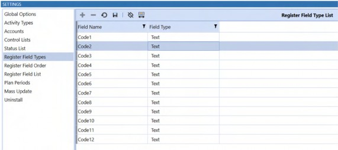
| Note: The database must be cleared before making any field Type change. The Plan table (where the calculated results are stored) does not reflect the changes you made on the Register. If Reports are created using the Plan table, they will not show up correctly. |
Planning Without Limits › Planning without Limits › Planning at a Detailed Level Without the Detail › Special Considerations on Configuration › Register Field Types
Code2 to Numeric
What happens when Code2 is changed from Text to Numeric?
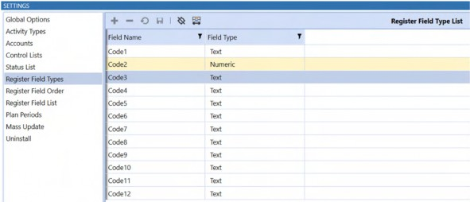
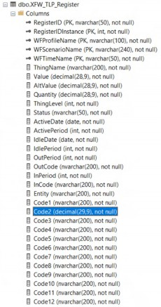
Figure 4.28 The change appears in the XFW_TLP_Register table:
But not in XFW_TLP_Plan:
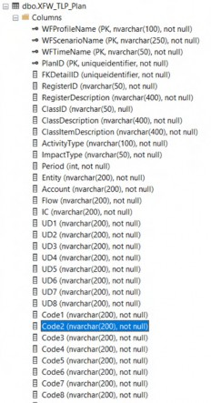
Figure 4.30
As noted, if a Report is from the Plan table, it will left-align the numbers instead of right. Change those fields if absolutely needed; else, do not.
Planning Without Limits › Planning without Limits › Planning at a Detailed Level Without the Detail › Special Considerations on Configuration
To Use the Period or to Use the Date, that is the Question
Time, as a concept, is ubiquitous within Specialty Planning and has several definitions that are easily confused, particularly the usage of date along with period. For example, in Thing Planning, the Thing’s ActiveDate along with the ActivePeriod as well as HireDate, HirePeriod, TermDate, and OutPeriod in People Planning can all be utilized. Why?
While the idea of using ActivePeriod/HirePeriod/OutPeriod to control the months in which the calculations are executed is a good one, it seems redundant to have period definitions to do this. Why cannot we use just the ActiveDate or HireDate or TermDate to drive this?
If you are using Thing Planning and want to check whether the Thing being calculated is active in the calculated period, use the Substitution Variable |dActiveMthPlan| to give you the active month based on Plan month, e.g., next year’s January is 13.
MthPlan Type Substitution Variables are present in People Planning/Capital Planning, and other Specialty Planning solutions as well. As an example, you could use |dHireMthPlan| to get the plan-based hire month.
For the other dates, you can use a simple XFBR function to get the Plan month and use that in the condition execution statement.
|CalcPer| >= XFBR(SpecialtyPlanning_StringHelper, GetPlanPeriodFromDate, Date=|DCode1|,CalcMonth=|CalcPerMth|)
SpecialtyPlanning_StringHelper is a custom XFBR Rule, and GetPlanPeriodFromDate is a custom function.In the below XFBR, the two arguments are passed to the function. The first one passes the date field, and the second one passes the CalcMonth (13th period is 1st month).
Dim retMonth As String = String.Empty Dim editedDate As Date =
DateTime.ParseExact(args.NameValuePairs.XFGetValue("Date"), "yyyyMMdd",CultureInfo.InvariantCulture)
Dim calcMonth As Integer = args.NameValuePairs.XFGetValue("CalcMonth")| Note: In the first line, an empty string is created to return the function’s result. |
We are converting the date field from the current row to an actual date in the second line since
|DCode1| comes to the Rule as yyyyMMdd string.
The third line tells us which Calc month is getting calculated, e.g., if we are calculating the 14th period, then this variable gets a value of 2.
Dim wfYear As Integer = BRApi.Finance.Time.GetYearFromId(si,si.WorkflowClusterPk.TimeKey) Dim calcDate As New Date(wfYear, calcMonth, 1, 1, 0, 0)
Once we get the parameters passed and transformed, the Workflow’s year must be determined.
We are calculating a calculation month field using the calc month and Workflow year information in the following If…End If test.
If wfYear = editedDate.Year Then retMonth = editedDate.Month
Else If wfYear > editedDate.Year Then
'prior year, set the month to 1 based on requirement retMonth = 1
Else If wfYear < editedDate.Year Then ' future year, get the calc retMonth = DateDiff(DateInterval.Month, calcDate, editedDate) + calcMonth
End IfIf Workflow year and the parameter year are equal, then the current month should be returned. If Workflow year is greater than the checked year, the year is a prior date, so the code should return the current month as the first month so that the calculation will start there.
If the Workflow year is less than the tested year, we need to find the difference in months and then add the calc month to it, to get the year’s period.
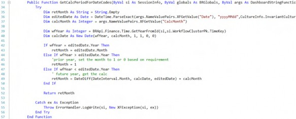
Here is the whole function. If you wonder about where the ActiveDate Substitution Variables came from and how they are defined, read on as they will be covered in the Viewing the Substitution Variables section.
Planning Without Limits › Planning without Limits › Planning at a Detailed Level Without the Detail › Special Considerations on Configuration
Use those System Fields where Possible
There is a limited set of columns (43) available in Specialty Planning solutions. However, if you are creative, you can use some of the system columns like InPeriod, OutPeriod for recording an integer value or even tie it to a control list that shows the User a list of choices.
Plan your column usage by counting the number of columns needed by the application by Type:
Get the count of pure text columns.
Get the count of decimal columns.
Get the count of columns that can be a pick-list.
Get the count of date columns.
With this list, identify which of the 26 code fields (Code1-Code12, NCode1-NCode8, DCode1-DCode4, Annot1-Annot2) can be refined, based on the application’s needs. You can then fit all possible items identified earlier into these 26 code fields.
Reserve the annotation fields for columns that have longer text, as these two columns have a NVARCHAR(MAX) as data Type. You can store up to 2 GB of data in there. (Approximately one billion characters which your author hopes is sufficient.)
What if there are more text columns than numeric columns? If you can make some of the text columns as a pick-list, you can use the numeric columns (including the NCodes) substitutes for those textual values.
Creating a pick-list on those NCode columns is tricky as they are treated as decimal numbers in SQL.
I have got some handy dandy code that I use to do this.
Dim dt As New DataTable() dt.Columns.Add("Name") dt.Columns.Add("Value")
To solve this issue, create a Name Value Pair table to return as bound list parameters in lines 1-3. This function can be called as shown below:
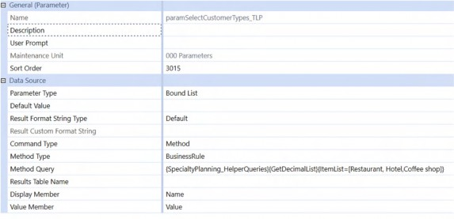
Figure 4.31
The Method Query passes an item list to the function as a comma-separated list.
Dim strList As String = args.NameValuePairs.XFGetValue("ItemList")
This code gets the value that has been passed to the function. (NameValuePairs is analogous to a dictionary where you have a key that holds some values.)
If Not String.IsNullOrEmpty(strList)
Dim pickListItems As List(Of String) = strList.Split(",").Select(Function(x) x.Trim).toList()
Dim counter As Integer = 1
For Each pickListItem In pickListItems Dim row As DataRow = dt.NewRow row("Name") = pickListItem row("Value") =
SqlTypes.SqlDecimal.ConvertToPrecScale(SqlTypes.SqlDecimal.Parse(count er), 28, 9)
dt.Rows.Add(row) counter += 1
Next End IfThis code snippet must perform the following tasks:
Check whether the
strListitem list is empty or not. If it is not empty, convert this string to a list of items.Split the
strListlist using a comma as delimiter, trim the split string, and add it to the pickListItems .Create a counter for the
pickListItemsvalue.Change that value’s precision and scale to 28 and 9, respectively. Here is the output of the function:
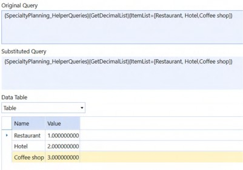
Figure 4.32
Here is the function in its entirety:
Private Function GetDecimalList(ByVal si As SessionInfo, ByVal args As dashboardDataSetArgs) As DataTable
Try
Dim dt As New DataTable() dt.Columns.Add("Name")
dt.Columns.Add("Value")
Dim strList As String = args.NameValuePairs.XFGetValue("ItemList")
If Not String.IsNullOrEmpty(strList)
Dim pickListItems As List(Of String) = strList.Split(",").Select(Function(x) x.Trim).toList()
Dim counter As Integer = 1
For Each pickListItem In pickListItems Dim row As DataRow = dt.NewRow row("Name") = pickListItem row("Value") =
SqlTypes.SqlDecimal.ConvertToPrecScale(SqlTypes.SqlDecimal.Parse(count er), 28, 9)
dt.Rows.Add(row) counter += 1
Next End If
Return dt
Catch ex As Exception
Throw ErrorHandler.LogWrite(si, New XFException(si, ex)) End Try
End FunctionPlanning Without Limits › Planning without Limits › Planning at a Detailed Level Without the Detail
Using Specialty Planning Solutions
Planning Without Limits › Planning without Limits › Planning at a Detailed Level Without the Detail › Using Specialty Planning Solutions
Data Entry, the Magic of No Metadata, and Controlled Entries
Compared to a Cube-based solution, Specialty Planning solutions behave very differently when it comes to metadata. An Administrator is not needed (and indeed is not able) to add the customers, employees, assets, etc. The key thing to remember is that the Planner does it himself; no Administrator is involved. “Nothing is true; everything is permitted.”
Some form of data standardization is, of course, needed; apply parameters to control data by column. These parameters must be of Types that can return a value and a display, e.g., Bound List, Member List, or Delimited List.
In this example, the division is coming from an external relational table (DimSalesRegion).
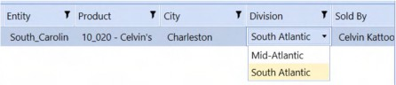
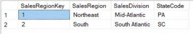
Figure 4.33
By doing so, you are now integrating the Specialty Planning solution to an external source for “metadata” using parameters. I told you it is nothing short of magical.
| Note: It is not advisable to use an extensive list with 100s of Members as this can significantly slow the solution’s performance while presenting a difficult-to-navigate User Interface. |
Planning Without Limits › Planning without Limits › Planning at a Detailed Level Without the Detail › Using Specialty Planning Solutions
Security
Securing a Specialty Planning solution can be done using only Workflow Entity assignment or through a custom solution.
When Entities are assigned to the Workflow, use the default solution parameter called MemberListEntity_TLPT. If you are planning to use your own, use E#Root.WFProfileEntities as Member Filter.
Here is C&CCC’s Workflow setup:
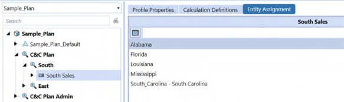
Figure 4.34
When a Planner tries to select a sales entry, they can only add the Entities that are assigned to this Workflow.
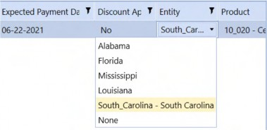
Figure 4.35
This setup will make sure that wrong Entities are not added to a Workflow if Planners are allowed to enter records in a Specialty Planning solution.
Planning Without Limits › Planning without Limits › Planning at a Detailed Level Without the Detail › Using Specialty Planning Solutions
How do We See the Month’s Results?
Think of the Register/data entry as a whole plan year entry. Once you enter the plan year’s value, the Specialty Planning solution uses its unique Methods to calculate the plan year value into the months.
Planning Without Limits › Planning without Limits › Planning at a Detailed Level Without the Detail › Using Specialty Planning Solutions
Allocation Methods
Allocation Methods are analogous to a custom Finance Business Rule that returns a value.
You can define the value that needs to be returned; also, you can add static Member intersections to this value. (This is where the data – if loaded to a Cube – will go to.)
In the example given below, Account is Price and Flow is Endbal_Input. The value is determined by a mix of conditional Ifs and an XFBR.
Figure 4.36 Calculating the price is done by calling an XFBR as shown below:
XFBR(SpecialtyPlanning_StringHelper,CalculatePrice,IsDiscounted=|InPer
|, Discount=|Restaurant discount|,PricePerLB=|Value|,QTY=|Quantity|,Unit=|ThingLevel|)You can pass the global discount rate that we defined in the Global Drivers section to the XFBR.
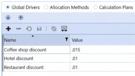
Figure 4.37
Here is the full-blown Allocation Method to check whether the customer is a coffee shop, restaurant, or hotel; based on the Type, their respective global discount rate that we defined in Global Drivers is passed to the XFBR.
IIF(|NCode1|=1,XFBR(SpecialtyPlanning_StringHelper,CalculatePrice,IsDi scounted=|InPer|, Discount=|Restaurant discount|,PricePerLB=|Value|,QTY=|Quantity|,Unit=|ThingLevel|),IIF(|NC ode1|=2,XFBR(SpecialtyPlanning_StringHelper,CalculatePrice,IsDiscounte d=|InPer|, Discount=|Hotel discount|,PricePerLB=|Value|,QTY=|Quantity|,Unit=|ThingLevel|),IIF(|NC ode1|=3,XFBR(SpecialtyPlanning_StringHelper,CalculatePrice,IsDiscounte d=|InPer|, Discount=|Coffee shop discount|,PricePerLB=|Value|,QTY=|Quantity|,Unit=|ThingLevel|),0)))/|P EndPer|
The XFBR function checks where a discount is applied. If there is a discount, it does the following by looking at the unit (price is stored per lb.)
If the unit is pounds:
Price = Price per lb * quantity * ( 1 – Global discount based on the customer)
If the unit is short tons:
Price = Price per lb * quantity * 2000 * ( 1 – Global discount based on the customer)
If the unit is metric tons:
Price = Price per lb * quantity * 2204.62262 * ( 1 – Global discount based on the customer)
Below is the function that does the price calculation.
Dim price As Decimal = 0
Dim isDiscounted As Boolean = ConvertHelper.ToBoolean(args.NameValuePairs.XFGetValue("IsDiscounted", 0))
Dim discount As Decimal = args.NameValuePairs.XFGetValue("Discount", 0)
Dim pricePerLB As Decimal = args.NameValuePairs.XFGetValue("PricePerLB")
Dim qty As Decimal = args.NameValuePairs.XFGetValue("QTY") Dim unit As Integer = args.NameValuePairs.XFGetValue("Unit")
If isDiscounted Then Select unit
Case 1 ' pound
price = pricePerLB * qty * ( 1- discount)
Case 2 ' ST
price = pricePerLB * qty * 2000 * ( 1- discount)
Case 3 ' Tonne
price = pricePerLB * qty * 2204.62262 * ( 1- discount) End Select
Else
Select unit
Case 1 ' pound
price = pricePerLB * qty Case 2 ' ST
price = pricePerLB * qty * 2000 Case 3 ' Tonne price = pricePerLB * qty * 2204.62262 End Select
End IfOnce the price is determined, it is converted to a monthly amount by using the |PEndPer|
Substitution Variable.
Use Substitution Variables in the description to show the User how the calculation works. Keep in mind that it only replaces the Substitution Variable. If you use expressions in Description (as shown below)…
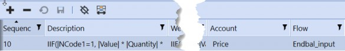
Figure 4.38
…you will see something similar in the calculated data.
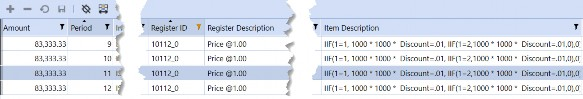
Figure 4.39
Now that we have the price, let us add it to a Calculation Plan.
Planning Without Limits › Planning without Limits › Planning at a Detailed Level Without the Detail › Using Specialty Planning Solutions
Calculation Plans
If the Allocation Method is a custom Finance Business Rule, the Calculation Plan is the Data Management Step that calls that Rule.
The following Calculation Plan runs the price Allocation Method.
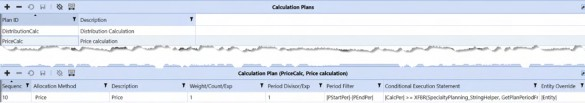
Figure 4.40
Calculation weighting can be defined by assigning a percentage or a number. However, it is only applied if the Allocation Method’s value Type is Fixed Value or Value Percentage.
The Period Divisor can also be used to get a monthly rate provided the Allocation Method’s value Type is Value Percentage.
In this example, a zero suppressed expression (Expression (ZP)) is used so the monthly price must be calculated, hence the divide by end period Substitution Variable.
Calculation Plans are extremely useful to define which periods the calculation should execute; conditional checks on those filtered periods can be performed as well.
The calculation begins at the Plan start period (1) through to the Plan end period. Once those periods are defined, they are filtered using a conditional expression as created in the To use the period or to use the date section of this chapter. These conditional expressions check whether the period from the period filter is greater than, or equal to, the payment start period.
Overrides can also store the Register row values as Member values using Substitution Variables (the Allocation Method stores a static value).
Planning Without Limits › Planning without Limits › Planning at a Detailed Level Without the Detail › Using Specialty Planning Solutions
Execution List
Execution lists are like a Data Management Sequence that calls Data Management Steps (Calculation Plans). Calculation plans can be executed based on Workflow, Scenario, and Status in an execution list.
Figure 4.41
This use case has different Allocation Methods and Calculation Plans based on regions. The status filter executes them on demand.
Planning Without Limits › Planning without Limits › Planning at a Detailed Level Without the Detail › Using Specialty Planning Solutions
Sequences and their Importance
Sequences in Allocation Methods, Calculation Plans, and execution lists define their execution order. Lower sequence items get written to the Register cache first.
This plays a significant role when you are going to use a calculated result to derive another calculation. A source Calculation Plan should have a lower sequence number to get the correct results.
Planning Without Limits › Planning without Limits › Planning at a Detailed Level Without the Detail
Loading the Data
The Workflow Profile Type Workspace, Import, Load, and Process automatically load the data when the Workflow is completed. This example used the default Connector Rule to create a data source and added a Transformation Profile to transform Accounts and Time.
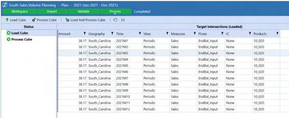
Figure 4.42
Planning Without Limits › Planning without Limits › Planning at a Detailed Level Without the Detail
Drill Back and Drill Down
Once the data is loaded, drill downs are free, and the default connector comes with a few drill back options. Drill backs are also free.
When performing a drill back on a Base level, the following drill back options appear:
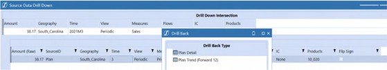
Figure 4.43
Plan Detail drill back will take you to the following Report, which will provide the Calculation Plan and the 26 custom fields used in the Register. (If you wish, you can change the SQL query in the connector.)
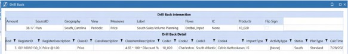
Figure 4.44
Plan Trend (Forward 12) drill back provides the following Report:
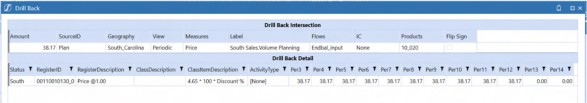
Figure 4.45
Planning Without Limits › Planning without Limits › Planning at a Detailed Level Without the Detail
A Bit More than Basic
This section covers Specialty Planning’s core architecture and functionality. Hold on to your metaphorical hat.
Planning Without Limits › Planning without Limits › Planning at a Detailed Level Without the Detail › A Bit More than Basic
Peeling Away the Wrapping
Planning Without Limits › Planning without Limits › Planning at a Detailed Level Without the Detail › A Bit More than Basic › Peeling Away the Wrapping
Creating Tables on Install
Have you ever wondered how the solution is “setup” when you click on the Setup Tables button? Of course you do, else you would have jumped right over this section. Continue reading to understand why Specialty Planning behaves as it does.
Most of the MarketPlace Specialty solutions come with a TableSetup file embedded in the Dashboard.
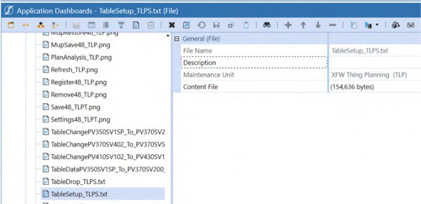
Figure 4.46
That file contains SQL DML and DDL statements. The Setup Tables button reads those statements from this file and executes them against the application database.
Planning Without Limits › Planning without Limits › Planning at a Detailed Level Without the Detail › A Bit More than Basic › Peeling Away the Wrapping
Using Templates for Calculation Definitions?
Templates to load calculation definitions can be used for:
Global drivers
Allocation Methods
Calculation Plans
Execution lists
Although this can be done in a Specialty Planning application directly, Excel is easier to work with because formulas can derive some of the columns.
You can download the existing templates for Allocation Methods and Calculation Plans from the Specialty Planning solution’s Dashboard Unit File System.
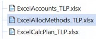
Figure 4.47
Planning Without Limits › Planning without Limits › Planning at a Detailed Level Without the Detail › A Bit More than Basic › Peeling Away the Wrapping
Viewing the Substitution Variables
Use the toolbar in the Allocation Methods and Calculation Plans to use the different Substitution Variables in their respective fields.
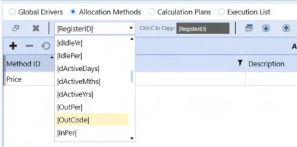
Figure 4.48
Select the variable and then the text from the text box on the right to copy it to the field.
Explore these variables as there are hidden gems like dActiveDays that returns how many days a Thing was active. This variable even looks at whether a Thing was idle and processes it using the idle date. People Planning has something similar called dEmployedDays, which returns how long the employee was employed.
Planning Without Limits › Planning without Limits › Planning at a Detailed Level Without the Detail › A Bit More than Basic › Peeling Away the Wrapping
Copy Allocation Methods and Calculation Plans
If you want to replicate a calculation definition and change a field or two, create the target Allocation Method/Calculation Plan, save the Method, select its row, and use the Open Copy button to copy from a source.
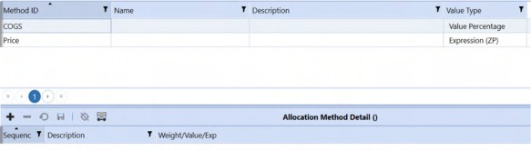
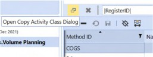
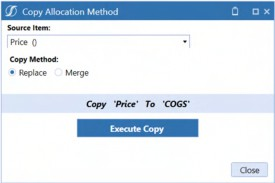
Figure 4.49
Execute the copy and it will duplicate the details.
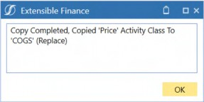
Figure 4.50
Result
Figure 4.51
Planning Without Limits › Planning without Limits › Planning at a Detailed Level Without the Detail › A Bit More than Basic › Peeling Away the Wrapping
What is the Difference between Multiple Specialty Planning Solutions like Thing Planning, Capital Planning, and People Planning?
In the beginning, there was only water. Millions of years passed, then land started to form. Wait. No. This is not in a geology lesson but instead a Specialty Planning genealogy. The product line started with People Planning and has been expanded for specific use cases such as Capital Planning. As more and more demands for doing detailed level Planning came up, Thing Planning was born.
Interestingly, apart from a few additional specific columns and specific Allocation Method value Types, all of the products are the same. If they are the same, the question presents itself: should you be using Thing Planning for People Planning? No. People Planning is optimized for Workforce Planning. As a developer, you could customize Thing Planning to match People Planning’s functionality, but why reinvent the wheel?
| If none of the Specialty Planning solutions meet your needs, go with Thing Planning. |
Planning Without Limits › Planning without Limits › Planning at a Detailed Level Without the Detail › A Bit More than Basic
Event Handlers
You might be wondering why do I ever need an Event Handler. I can do stuff on my own �
What is an Event Handler? It is simply a code function that fires when a specific product event occurs.
As an example, C&CCC’s Volume Planning has a requirement to calculate the payment date from the selling date. For coffee shops, the payment date is two months after the selling date. For hotels, it is after 15 days, and restaurants should pay after a month.
You saw that calculated results are stored in the Plan table. How do we run a calculation on Register items?
Here is where an Event Handler script is useful. Download the Template Rule provided with the solution.
Figure 4.58
You can edit the XML file if you want to change the name of the Rule. Upload the zip, and a new Dashboard Extender Rule will now be in the application.
Once the Rule is imported, Event Handler functions can be used for Component selection changes/Table Editor saves. From PV620-SV100 version onwards, a custom filter on the Register items can be added before calculating them instead of using a conditional expression.
To calculate the payment date, a custom function in the Event Handler Rule was added as shown below:
For Each xfRow As XFEditedDataRow In saveDataTaskInfo.EditedDataRows If xfRow.InsertUpdateOrDelete = DbInsUpdateDelType.Insert OrElse xfRow.InsertUpdateOrDelete = DbInsUpdateDelType.Update Then
Dim soldDate As Date = xfrow.ModifiedDataRow.Item("ActiveDate") Dim customerType As Decimal = xfRow.ModifiedDataRow.Item("NCode1")
If customerType = 3 Then 'coffee shop xfrow.ModifiedDataRow.SetValue("IdleDate", soldDate.AddMonths(2), XFDataType.DateTime)
ElseIf customerType = 2 Then ' hotel xfrow.ModifiedDataRow.SetValue("IdleDate", soldDate.AddDays(15), XFDataType.DateTime)
ElseIf customerType = 1 Then ' restaurant xfrow.ModifiedDataRow.SetValue("IdleDate", soldDate.AddMonths(1), XFDataType.DateTime)
Else
xfrow.ModifiedDataRow.SetValue("IdleDate", soldDate, XFDataType.DateTime)
End If End If
NextFor every edited row (new or updated), the code checks the customer Type and calculates the payment date from the sold date accordingly.
Using dbConn As DbConnInfo = BRApi.Database.CreateDbConnInfo(si, saveDataTaskInfo.SqlTableEditorDefinition.DbLocation, saveDataTaskInfo.SqlTableEditorDefinition.ExternalDBConnName)
dbConn.BeginTrans() BRApi.Database.SaveDataTableRows(dbConn, saveDataTaskInfo.SqlTableEditorDefinition.TableName, saveDataTaskInfo.Columns, saveDataTaskInfo.HasPrimaryKeyColumns, saveDataTaskInfo.EditedDataRows, True, False, True)
dbConn.CommitTrans()
End Using
result.IsOK = True result.ShowMessageBox = False result.CancelDefaultSave = FalseOnce calculated, only the changed entries are saved to the Register. Once the entries are saved, the default save feature is cancelled.
Here is the full function used for this requirement.
Add this function to the AfterSaveDataEvent for the SaveRegisterRows function, as shown below.
Planning Without Limits › Planning without Limits › Planning at a Detailed Level Without the Detail › A Bit More than Basic
What is BRGlobals, and How Does it Help in Specialty Planning Solutions Calculations?
Imagine a driver-based Planning process that uses the Entity Dimension. Its detailed Planning employs Specialty Planning.
This approach could store the driver for a given Entity/Account combination in the Cube and retrieve the value for Specialty using an XFBR in an Allocation Method. Alternatively, the driver could be stored in a relational table.
Planning Without Limits › Planning without Limits › Planning at a Detailed Level Without the Detail › A Bit More than Basic › What is BRGlobals, and How Does it Help in Specialty Planning Solutions Calculations?
Merging Cube Data with Specialty Planning
Using the example of C&CCC’s Volume Planning, I can perform a detailed Distribution calculation using a Distribution Rate stored in the Sample Cube.
Figure 4.59
What happens when there are 1,000 sales items for South_Carolina in the Register? What happens during the calculation process is the distribution rate that is stored against
South_Carolina is fetched 1000 * 12 times. Is this really necessary, or could it instead be retrieved just 12 times?
This is where BRGlobals comes into play as it allows you to set a global value and retrieve it elsewhere so long as all processes are called sequentially. (Or in pure VB.Net terms; in the same thread.)
Using the Event Handler described in the previous section, a BeforeSelectionChangedEvent for CalculatePlan that pulls the values for all Workflow Profile Entities and saves them as a Dictionary object can be set up. If this is a value that needs multiple combinations, it can be added as a DataTable to BRGlobals.
Else If (args.FunctionName.XFEqualsIgnoreCase("CalculatePlan")) Dim dt As DataTable =
BRApi.Import.Data.FdxExecuteDataUnit(si, "Sample", "E#Root.WFProfileEntities", "Local", ScenarioTypeId.Plan, "S#Plan", "T#WF.Months", "Periodic", True, "Account='Distribution_Rate' AND UD1='None' AND Flow='Endbal_Input' AND Origin='Forms'", 8, False)
globals.SetObject("DistributionRateTable", dt)The FDX operator is used to extract the Data Unit for all Profile Entities. Once extracted, an in-memory table similar to the one below is created:
Figure 4.60 A function in the XFBR Rule calculates Distribution:
Dim distribution As Decimal = 0
Dim sales As Decimal = args.NameValuePairs.XFGetValue("Sales")
Dim calcMonth As Integer = args.NameValuePairs.XFGetValue("CalcMonth") Dim entity As String = args.NameValuePairs.XFGetValue("Entity")
Dim distRateDT As DataTable = globals.GetObject("DistributionRateTable")The first line initiates a variable as the return of this function.
The second, third, and fourth lines receive the parameters passed to this function. In the fifth line, the DistributionRateTable from BRGlobals is retrieved.
Dim wfYear As Integer = BRApi.Finance.Time.GetYearFromId(si,si.WorkflowClusterPk.TimeKey) If Not distRateDT Is Nothing
Dim distRateRow As DataRow()= distRateDT.Select("Entity='" & entity & "' AND Time='" & wfYear & "M" & calcMonth & "'")
If distRateRow.Count = 1 Then
distribution = sales * distRateRow(0)("Amount") End If
End IfThis code snippet determines the Workflow year. Once calculated, we know the year and are now querying the in-memory table using a filter, as seen in line three.
In line four, the code ensures that an entry for that Entity and Time period exists in the
DataTable. If true, the code derives the distribution rate and calculates the Distribution.
Figure 4.61
In the allocation Rule, !|Entity| is used as the Substitution Variable. If ! is used with a Substitution Variable, the value will not be enclosed in single quotes.
Here is the result of the calculation:
Figure 4.62
Real-world applications that use a similar relational table driver storage model have been observed to provide four times better performance than non in-memory Methods.
If you are going to use Substitution Variables for comparison then it is easier to use the ones without the single quotes. The following codes are available to use without the single quote wrapping:
!|OutCode|!|InCode|!|Entity|!|Code1|!|Code2|!|Code3|!|Code4|!|Code5|!|Code6|!|Code7|!|Code8|!|Code9|!|Code10|!|Code11|!|Code12|!|Annot1|!|Annot2|
Planning Without Limits › Planning without Limits › Planning at a Detailed Level Without the Detail › A Bit More than Basic
Does Anyone Here Know the Guy Called RegisterCache?
As we saw in the previous section, caching makes a lot of difference in the relational world. If you have looked at the Dashboard Extender Rule for Specialty Planning solutions, you might have noticed another class in this Rule called RegisterCacheItem.
This class plays an important role in the efficiency of Specialty Planning calculations. The calculation is done in parallel, and it is done on a row by row basis. The calculated row is written to an in-memory table, and it is then saved to the Plan table.
RegisterCacheItem is the class that is helping out – behind-the-scenes – to achieve the process. It is also the class that gets used in many out-of-the-box XFBR Rules.
Planning Without Limits › Planning without Limits › Planning at a Detailed Level Without the Detail › A Bit More than Basic
Custom Functions in Specialty Planning
The following custom functions are available in out-of-the-box XFBR Rules:
GetTimeSpan– returns the difference between two dates (you can return the time span in days, months, years).GetRegValuedeprecated– returns the value of a Register field (use Substitution Variables for this purpose).GetLimitResidual– returns the residual amount by supplying a limit value.GetSumPer– returns the sum of an Account for a given period and a Register ID.GetSumCum– returns the cumulative sum of an Account until a given period and a Register ID.GetSumCustom– returns the sum based on criteria mentioned for a given Register ID.GetMin– returns the minimum value of an Account for a given period and a Register ID.GetMinCustom- returns the minimum value based on the criteria mentioned for a given Register ID.GetMaxGetMaxCustomGetAvgGetAvgCustom
If you are going to create custom functions that are going to fetch a calculated row, create them based on the available functions.
Planning Without Limits › Planning without Limits › Planning at a Detailed Level Without the Detail
Specialty Planning Solution vs. a Custom Solution
OneStreamers often say, “Oh, that’s a Thing Planning solution” when faced with a set of Planning requirements that are not good fits for the more specialized Specialty Planning modules. But is it? What determines suitability?
Planning Without Limits › Planning without Limits › Planning at a Detailed Level Without the Detail › Specialty Planning Solution vs. a Custom Solution
Fitness for Purpose
Consider C&CCC’s requirement for capturing Sales information. They need to capture sales across cities in the USA by Sales Representative. While Thing Planning could do that, it is akin to a sledgehammer used to crack a nut.
The following are some areas where Thing Planning is overkill or cannot meet specific requirements:
Reporting information is captured but not planned.
Planning drivers vary by Thing.
Plan is entered and calculated by months.
Could Thing Planning be used in this context? Yes, but with several disadvantages.
Thing Planning’s overhead is incurred but not used.
Thing Planning’s model does not cleanly support different drivers by Thing if they vary by month or if you’ve used all the numeric columns.
While a Scenario with monthly input could be created and calculate a single month, this approach requires 12 Workflows, thus repeating the same “Thing” 12 times.
Planning Without Limits › Planning without Limits › Planning at a Detailed Level Without the Detail › Specialty Planning Solution vs. a Custom Solution
The Custom Way
A truly custom solution can scare off practitioners because of the complexity of creating SQL scripts to create the backbone of a relational system. This effort has been reduced with the introduction of a new tool in MarketPlace called Table Data Manager (TDM). It makes creating custom solutions (or just creating custom tables) a breeze.
Planning Without Limits › Planning without Limits › Planning at a Detailed Level Without the Detail › Specialty Planning Solution vs. a Custom Solution
Using TDM for Sales Information
On initial installation, TDM can interrogate the databases that are present in the Application Server Configuration File (including the external databases) to reveal table schema and data for tables not created using TDM.
This screenshot shows a DimEmployee that was not created by TDM; TDM-created tables have an
_XFC suffix.
Figure 4.63
Planning Without Limits › Planning without Limits › Planning at a Detailed Level Without the Detail › Specialty Planning Solution vs. a Custom Solution › Using TDM for Sales Information
Creating a Custom Sales Table
Figure 4.64
A few things that must be kept in mind when creating the tables:
You can upload a DDL file to create the table.
You cannot add indexes/foreign keys.
If you use a DDL file to create the table with indexes/foreign keys, TDM will create them. However, a download of the definition will not include them.
Copying tables also ignores the indexes/foreign keys.
You cannot use
[]in table names, so do not use spaces in table names.
Planning Without Limits › Planning without Limits › Planning at a Detailed Level Without the Detail › Specialty Planning Solution vs. a Custom Solution › Using TDM for Sales Information
Importing Data
Data imports to an XFC table requires an XML file. The format of the file is straightforward:
<DocumentElement>is the root element.<TableName>is the only Parent node and repeats for each data row.<ColumnNames>defines the field Child nodes.Data is encapsulated in the
<ColumnNames>nodes.
Once the table is created, a Dashboard with a SQL editor Component can be used to enter data into this table.
Figure 4.65
These custom tables can be used as an integration point, or as a piece of detailed information for Specialty Planning solutions if the required column count exceeds the maximum number supplied.
For example, you can just add the Sales Order Number and Line Item (provided they are unique) in the Specialty Planning solution and create a custom button to show the details from this table. The possibilities are endless.
Planning Without Limits
Conclusion
Hopefully, this chapter has shown that Specialty Planning solutions are special in their own way. They let you plan and analyze data at a detailed level by bringing the relational and multidimensional worlds together. Use them.